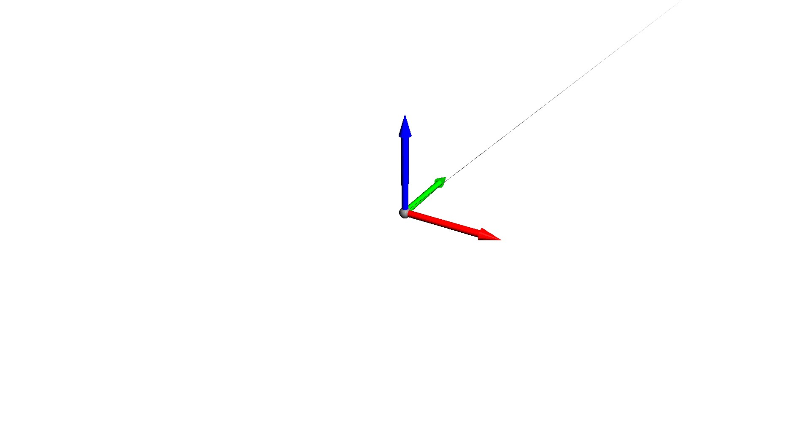

Note
Click here to download the full example code
Animate Line¶
Animates a line.
print(__doc__)
import numpy as np
import pytransform3d.visualizer as pv
def animation_callback(step, n_frames, line):
t = step / n_frames
P = np.empty((100, 3))
for d in range(P.shape[1]):
P[:, d] = np.linspace(0, 1 - t, len(P))
line.set_data(P)
return line
fig = pv.figure()
P = np.zeros((100, 3))
colors = np.empty((99, 3))
for d in range(colors.shape[1]):
P[:, d] = np.linspace(0, 1, len(P))
colors[:, d] = np.linspace(0, 1, len(colors))
line = fig.plot(P, colors)
frame = fig.plot_basis(R=np.eye(3), s=0.5)
fig.view_init()
n_frames = 100
if "__file__" in globals():
fig.animate(
animation_callback, n_frames, fargs=(n_frames, line), loop=True)
fig.show()
else:
fig.save_image("__open3d_rendered_image.jpg")
Total running time of the script: ( 0 minutes 0.303 seconds)